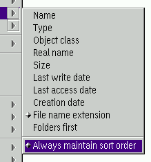

Class: XFolder
XWorkplace can also enhance the "Sort" functions of the Workplace Shell.
Important note: In order to avoid confusion, the sort extensions are
disabled by default. You can enable them in the
"XWorkplace Setup" object.
The new XWorkplace sort features are:
- Finally, there are global sort settings,
which previously did not exist in the WPS.
While it was possible to set a number of folder settings globally, until now sorting could
only be influenced for each individual folder, which was quite annoying. XWorkplace
introduces a "Sort" page to the
"Workplace Shell" object for global sort settings,
which can be overridden individually for
each folder.
- XWorkplace also gets rid of some of the strange sort settings which nobody used
anyway, such as the "sort class". (This setting did not make much sense, because
WPFolder is the only class which introduces meaningful sort criteria anyway.)
- There is a new item in the "Sort" context submenu for enabling the
"Always maintain sort order" setting quickly.

- You can quickly change the default sort criterion for a certain folder by
opening the "Sort" context submenu and holding down the "Shift" key while selecting
a sort criterion.
- Most importantly, XWorkplace
introduces three new options to the "Sort" menu of every folder, which are
"Sort by object class", "Sort by extension" and "Sort folders first":
- The "Sort by object class" feature sorts the folder content according to
the classes of the contained objects, as they are visible in the third column of a
folder's Details view.
- The "Sort by extension" option sorts the
folder contents by file name
extension, i.e. the characters after the last dot in the object title. For example,
".BMP" files would be sorted before ".HTM", ".HTML" and ".ICO" files, in this order. If two
files have the same extension, they are sorted alphabetically within their extension group.
Although
file extensions make sense mostly for file-system objects, abstract objects are sorted in
this way too.
- The "Sort folders first"
sorts the folder alphabetically, but puts all folder objects on top of the list.
Shadows of folders are treated just like regular folders.
Per default, XWorkplace defines "Ctrl+E" as a
folder hotkey for the "Sort by extension"
function. You may also set up a hotkey for the "Sort folders first" function
in the Global Settings, if you wish.